- Issue
- #52 · m5-03 target config ui
- PR
- #126
- Validation commit
- 4b21c28
- CI
- run 40409345237 · 3/3 green
- Runtime
- FastAPI + Vite + Google Chrome
- Database
- 临时 SQLite fixture
- Git boundary
- test-only deterministic GitRemote
- Evidence
- CDP 计算样式/交互断言 + 原生 Computer Use 截图
Harness Evolution · PR #126 · validation on 4b21c28
M5-03 进化对象配置 GUI 集成冒烟
在临时 SQLite、真实 FastAPI/Vite、确定性 GitRemote 与 Google Chrome 上完成进化对象配置页集成验证。严格原型收口覆盖 1080px 页面骨架、720px 表单与全视口遮罩、紫色对象 chip、绿色/灰色状态 badge、422 表单内错误、成员只读、800px 与 390px 响应式，以及原生 Computer Use 的入口和表单检查。12 个场景全部通过，0 个未解决集成缺陷。
12冒烟场景
12通过
4原型偏差已修复
0未解决缺陷
0非预期控制台错误
Environment and Artifact
2026-10-27 · macOS · Google Chrome · FastAPI + Vite + SQLiteScenario Matrix
12 pass| # | 场景 | 结果 | 观测 | 证据 |
|---|---|---|---|---|
| 01 | 1408px 原型页面骨架 | PASS | 页面外框 1080px、内容区 1032px，18px/700 标题与 12px faint 说明对齐原型，无横向溢出。 | screenshots/01-desktop-1408.png |
| 02 | 720px 新增表单与遮罩 | PASS | 表单宽 720px、14px 圆角、15px/700 标题，body 为 18px 与 66vh 内部滚动，footer 使用面板底色；遮罩覆盖完整 viewport。 | screenshots/02-modal-1408.png |
| 03 | 422 表单内错误 | PASS | 无效仓库仅在打开的表单内显示中文错误，已填输入保留，不出现全局 toast。 | screenshots/03-inline-error.png |
| 04 | 新增成功与语义 chip | PASS | 真实 API 写入后新行出现；kind 使用紫色 mono chip，enabled 使用绿色 tinted badge。 | screenshots/04-created-row.png |
| 05 | 800px 中等视口 | PASS | 页面外框 800px、内容区 752px、左右 24px gutter；宽表格留在内部滚动容器中。 | screenshots/05-medium-800.png |
| 06 | 390px 配置列表 | PASS | 内容区 342px、页面无横向溢出；表格内部 scrollWidth 大于 clientWidth。 | screenshots/06-mobile-390.png |
| 07 | 390px 新增表单 | PASS | modal 宽 358px、左右各 16px，字段单列排列，页面本体无横向溢出。 | screenshots/07-modal-390.png |
| 08 | 成员只读权限 | PASS | 成员在独立真实浏览器会话中看到配置行，但没有新增按钮或行操作。 | screenshots/08-member-390.png |
| 09 | 自进化页齿轮入口 | PASS | icon-only 齿轮入口可访问且可进入配置页；390px 下页面无横向溢出。 | screenshots/09-evolution-entry-390.png |
| 10 | 原生 Computer Use · 配置页 | PASS | 原生 Chrome 中登录后从 Evolution 页点击齿轮进入配置页；标题、说明、两行配置、紫色 chip、绿色状态和操作按钮均可读。 | screenshots/10-native-targets-desktop.png native-cua-evidence.json |
| 11 | 原生 Computer Use · 新增表单 | PASS | 原生点击“新增配置”后，720px 表单、分区标题、字段、开关和 footer 操作正常呈现。 | screenshots/11-native-modal.png |
| 12 | Console / network | PASS | 仅刻意验证的 422 响应进入预期日志白名单；管理员和成员两个浏览器会话均无其他 warning、error 或未捕获异常。 | cdp-evidence.json |
Issues and Observations
P2 kind/status chip 与原型语义色不一致P2 配置页宽度与页头层级偏离原型
P2 新增表单尺寸、圆角与分区偏离原型
P2 页面定位 transform 截断弹窗遮罩
kind/status chip 与原型语义色不一致
- Actual
- 对象类型使用蓝色文字和普通边框，状态 badge 缺少浅色底。
- Expected
- kind chip 使用原型紫色文字、35% 紫边和 9% 紫底；状态使用绿色/灰色 tinted badge。
- Root cause
- 配置页新建的 chip 样式没有复用原型的语义标记规则。
已修复 · TDD + 真实 Chrome 复测
配置页宽度与页头层级偏离原型
- Actual
- 页面缺少 1080px 内容上限，并使用原型没有的 eyebrow 层级；中等视口还会重复叠加 gutter。
- Expected
- 1408/800/390 三档保持 24px 相对视口 gutter，标题与说明使用 page-head/page-note 层级。
- Root cause
- 页面嵌套在既有 main 留白中，同时自行创建了未对齐原型的头部和宽度。
已修复 · CDP 三视口回归
新增表单尺寸、圆角与分区偏离原型
- Actual
- 表单仅 560px，标题、圆角、padding 和移动端宽度未按原型定义。
- Expected
- 桌面 720px、14px 圆角、15px/700 标题、66vh 滚动 body；手机宽 358px。
- Root cause
- 只调整了 Element Plus 默认弹窗宽度，没有覆盖原型 modal 的完整计算值。
已修复 · 组件 + 真实 Chrome 复测
页面定位 transform 截断弹窗遮罩
- Actual
- 用于逃逸页面 gutter 的 transform 成为 fixed 后代的包含块，遮罩只覆盖内容容器。
- Expected
- 弹窗遮罩覆盖完整 viewport，同时页面在 1408/800/390 保持原型尺寸。
- Root cause
- 页面居中实现选择了会影响 fixed 定位的 transform。
已修复 · overlay rect 回归
Evidence
11 screenshots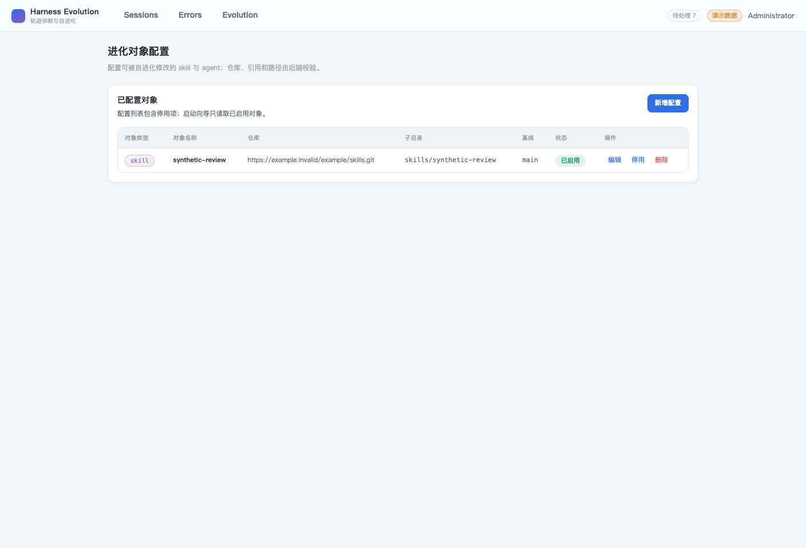
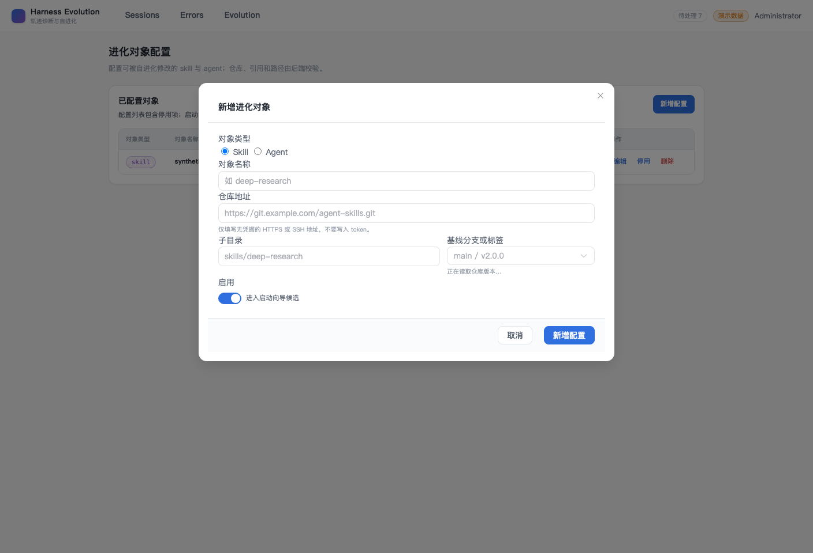
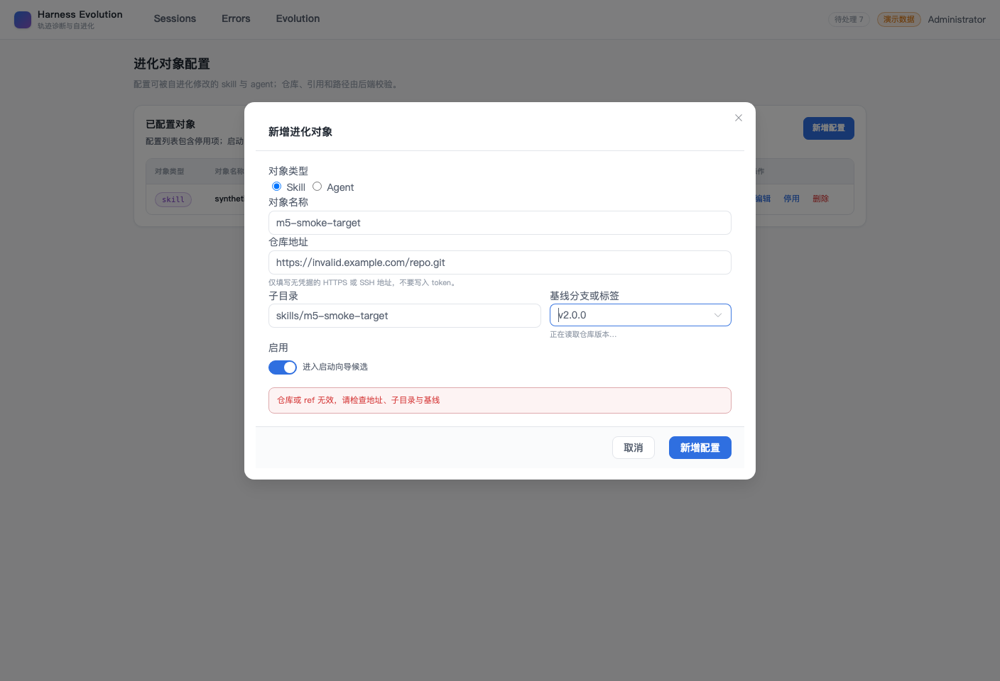
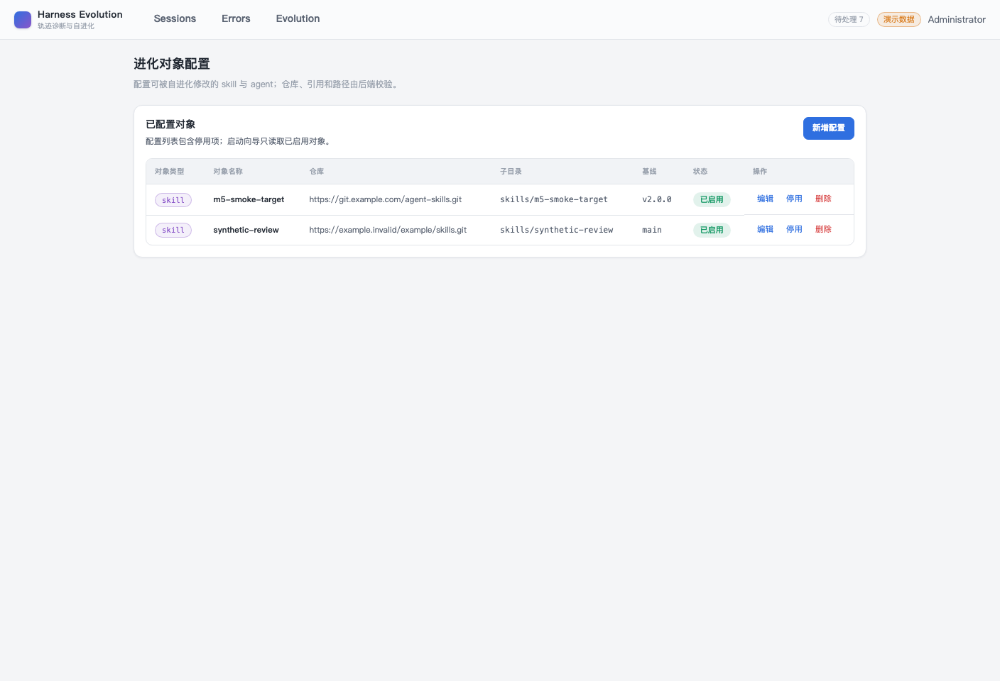
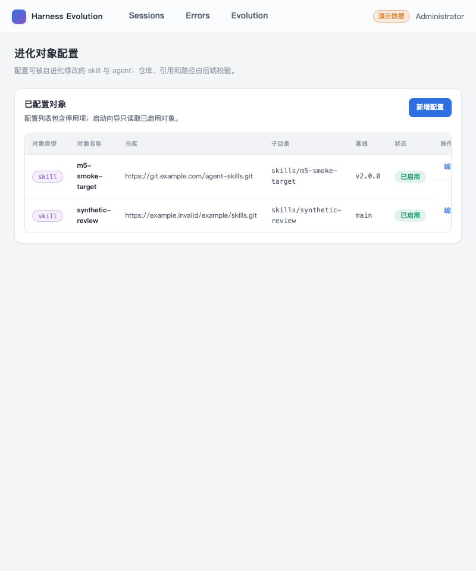
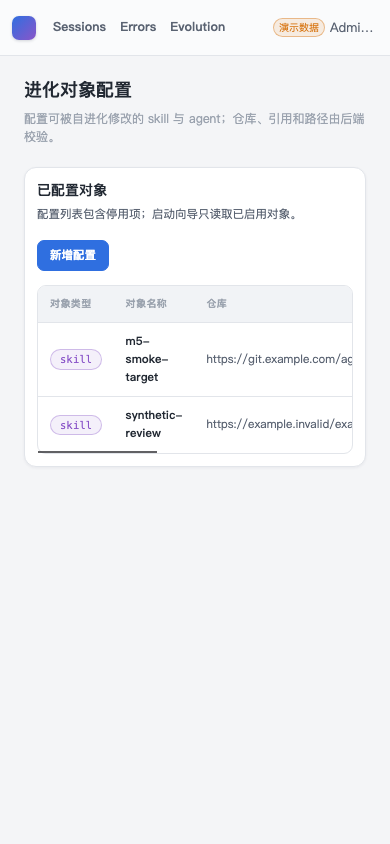
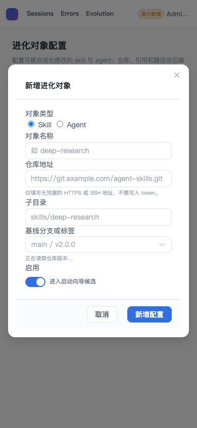
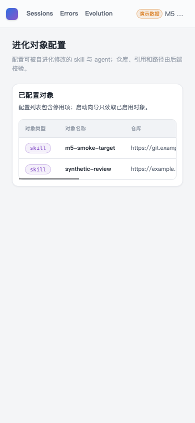
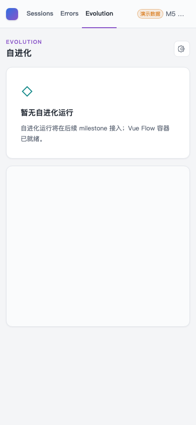
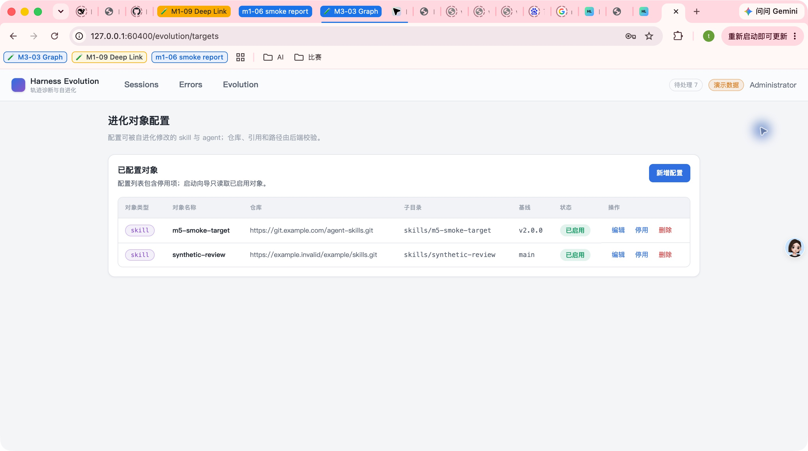
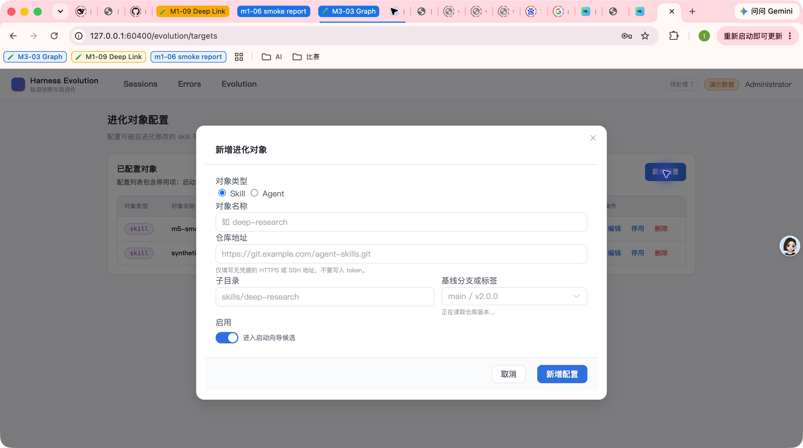
Automated Coverage Assessment
4 areas reviewed| 区域 | 覆盖 | 结论 | 建议 |
|---|---|---|---|
| 原型视觉 | CDP 计算样式 + 原生 Computer Use | 1080px 页面骨架、页头层级、语义 chip/badge、720px modal、14px 圆角和移动端尺寸均被真实计算值锁定。 | 原型或共享 token 变化时复跑本报告采集脚本。 |
| 交互与错误 | 真实 API + Chrome | 创建、422 输入保留、成员只读、齿轮入口与全视口遮罩均通过。 | 后续编辑/停用/删除变更继续使用真实 SQLite 场景。 |
| 响应式 | 1408 / 800 / 390 | 三档 gutter、内容宽度和页面无溢出被断言；宽表格只在自身容器内滚动。 | 新增列时同步更新表格最小宽度和移动端断言。 |
| 回归门禁 | Vitest + 真实 Chrome E2E + CI | 292 个 Web 测试通过（1 跳过），覆盖率 96.17%；PR CI run 40409345237 三项全绿。 | 报告提交后的最终 CI 仍需在合并前确认为绿色。 |
Conclusion
冒烟通过M5-03 在真实栈和原生 Chrome 上通过 12 个场景；已发现的四项原型偏差均在 PR 内修复并有自动化与截图证据。
- 当前 UI 的基础 token 和壳层与原型一致，M5-03 的局部视觉漂移已收敛。
- 配置页、表单和成员状态在桌面、中等宽度与手机上均无页面横向溢出。
- 422 只进入表单，弹窗遮罩覆盖完整视口，成员权限不泄漏写操作。
- 后续 M5-04/M5-05 必须继续以同一原型实现运行列表和向导入口。
证据源：原生 Computer Use、Chrome DevTools Protocol、真实 FastAPI/Vite/SQLite、Vitest 与 PR CI。HTML 由 report-data.json 渲染生成。